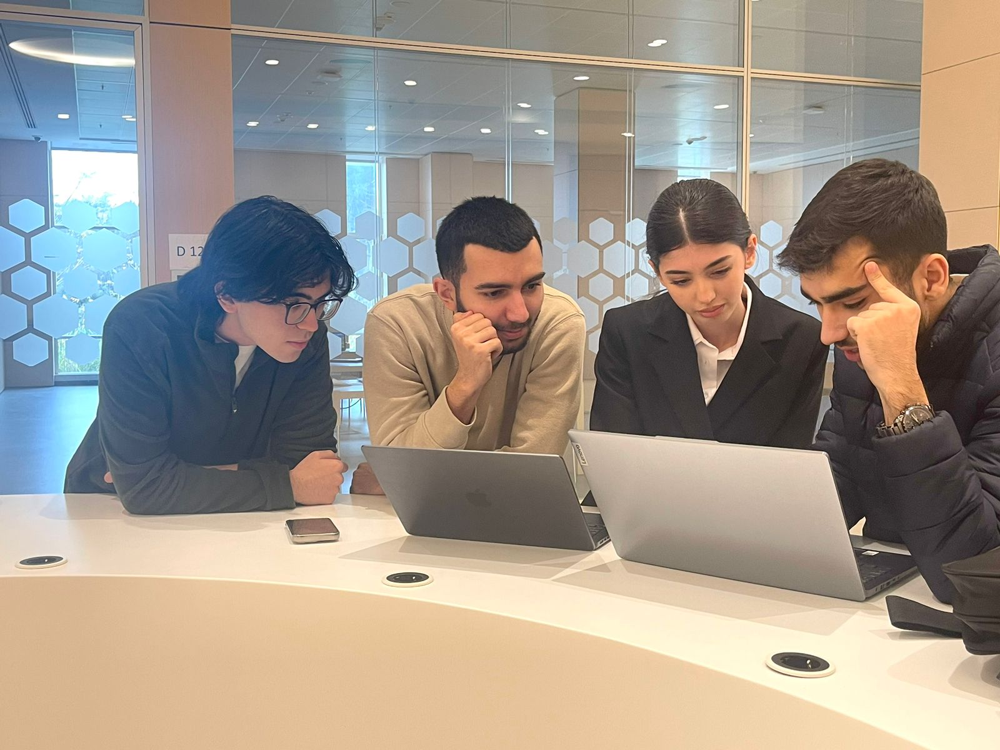

Web-Project Report
In this project, we used skills that we learned from Codecademy. We started this with creative ideas and outlining the website's structure. Each team member was assigned to do one part of this wonderful project. Though at the end, we all made changes. I would also like to mention that we all helped each other as a team if one of us faced some issues.
Our 'working as a team' process
Our team arranged daily calls and meetings throughout the week to discuss difficulties that each of us faced. This made us become closer as a team.

Now let's talk about this whole process we went through!!!
Design and Planning
Before starting this whole process, we first made a plan. We wanted it to be creative and simple. Thankfully, in the end, we all reached a mutual agreement.
Coding
We used our knowledge of HTML, CSS and JavaScript in this project. Each member's contribution in this project:
- Aziz = index.html + scripts.js
- Sabir = team-members.html + styles.css + scripts.js
- Davud = hour-of-code.html + scripts.js
- Samira = web-project.html + styles.css
Collaboration and tools
We collaborated through GitHub, which helped us to track changes and avoid problems in the code. VSCode was our main editor, and we used its Live Server feature to preview our work.
Testing and Feedback
Once we finished, we tested it several times and fixed all errors. We each gave feedback, which helped us to improve it.
Reflection
Overall, this project was a valuable lesson, experience, and memory for all of us as a very first project in university. It taught us the importance of working as a team, being patient with each other, compromising, problem-solving and persistence. Despite the challenges, we were able to complete the project and gain a deeper understanding of web development.